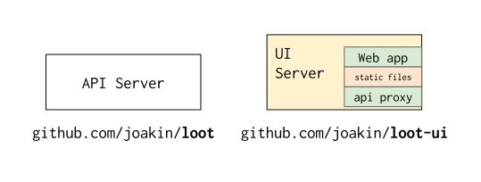
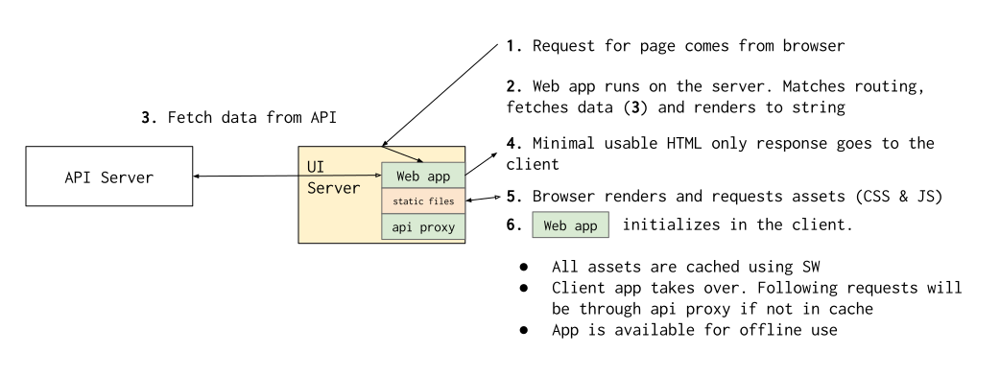
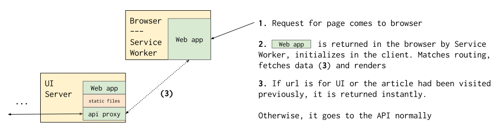

Architecture
In this page we intend to explain the general architecture of the project so that we can understand how the pieces fit together.
Main objectives of the architecture are:
- Keep API aggregation and transformations in a standalone server that we can scale and deploy somewhere else
- Same for the UI server, keep it standalone and focused so that it can be scaled as needed
- Support HTML only experience. Wikipedia is a content site and as such content should be available and usable even if other assets, like JavaScript, don't load or aren't supported
- Enhance the client experience on slow and unreliable networks and enable off-line access to the content
Components

Current architecture is composed of two pieces to accomplish the first two bullets on the previous list.
- API server: In charge of aggregation and transformation/massaging of content (loot)
- UI server: In charge of running the web app and server rendering,
exposing the API through a proxy and serving the static assets
(loot-ui)
- Any of this functionalities in a production environment can and should be moved to other tech stacks, like using nginx for static file serving and proxying, for example
Now that we understand the components, let's move in to understanding how they interact in different scenarios and what goes on at a high level.
First visit to a page
A user in a browser visits for the first time a page served by this architecture.

If the browser client is capable enough, we'll serve the JavaScript assets that will allow it to become a web app, so that navigation and caching happen in the client and you don't have to reload the full page every time you click a link.
If the browser is service-worker capable, it is initialized, and it will intercept network requests and cache them.
More concretely:
- Caching all the assets in the application (html chrome, CSS assets and JS app assets), meaning next time you visit the URL, the application will be there instantly and won't go to the server normally
- Caches images in a LRU queue, so already seen images will be there the second visit or with offline access
- Requests for asking the API are cached in client database
This will mean that from that point on you are able to open the site without internet connection and it will work.
Second (and rest of) visit(s) to the page
A user in a browser visits the page again (directly or from other referrer like google).

The user will see immediatly the chrome of the website, and the content will appear either instantly if it was already on the cache, or requested to the API.
This means the only request to the server is for the API, all the static assets are cached in the client, and the user gets something on the screen instantly.
In the background, a check for the service worker will be made and if there is any difference a new version of the app will be downloaded in the background.